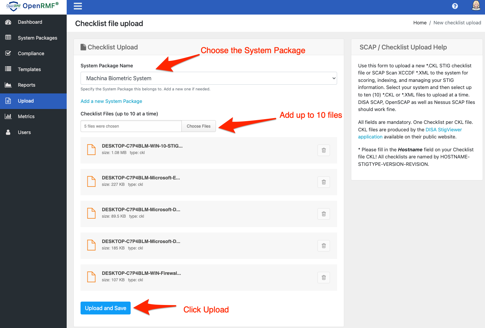
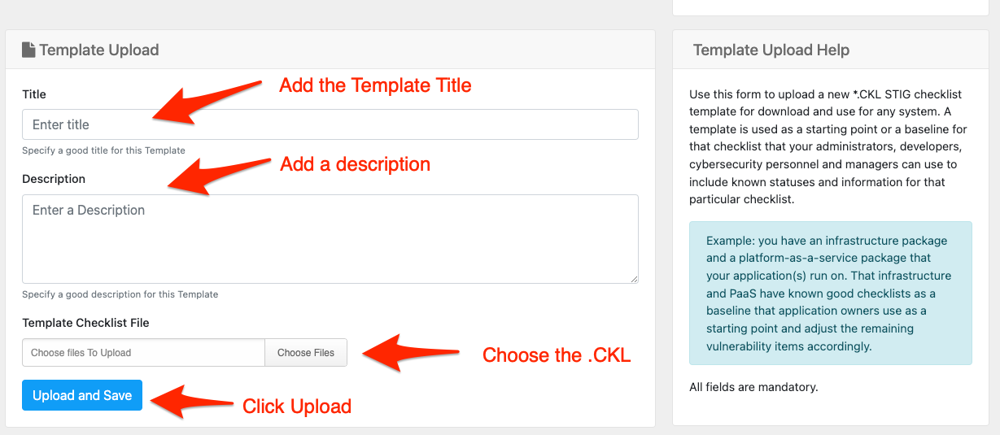
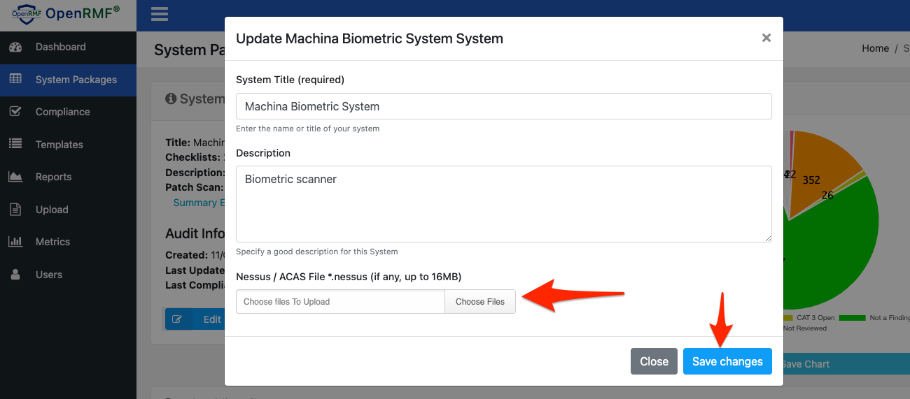

Uploading Checklists and Templates
The Upload page is available to users with the Administrator or Editor role assigned. There are three things you can do from this page.
- You can upload a CKL checklist file made from the DISA Java StigViewer. The process of making a CKL is outlined in Tutela’s blog post here.
- You also can upload a SCAP (DoD or Nessus SCAP) scan result in XCCDF XML format.
- Or you can upload a CKL file as a User Template for others to start from and create their checklist for the appropriate system technology.
Note: The Nessus Patch Management scan results file *.nessus is uploaded when you add or edit a System, not via the Upload page.
Process of Uploading SCAP results (XCCDF format .xml) or DISA StigViewer CKL files (.ckl) in OpenRMF

Upload Checklists or SCAP XCCDF files

To upload a CKL file or XCCDF SCAP scan result file go to the Upload page. Use the top section to choose a System name and the file. You can now upload up to 10 files at a time. You can choose all 10 at once, or do 1 file at a time with the Choose Files button.
If your system is not listed, click the “Add a new System” link and type in the System name. Then attach your files and click the Upload and Save button.
When you upload your files, you will receive a confirmation of the files loading correctly or not. If all works well, the files are saved into the database. And a separate event is fired off to read and “score” the checklist you uploaded to keep track of the number of items by status by category. These are the numbers that show up when you list your checklist.
If you upload an XCCDF XML SCAP scan result file (DISA or Nessus SCAP), that file is matched to internal System Templates from DISA’s known good publicly available checklists. That checklist is filled in with pass or fail items from the SCAP scan accordingly. Any vulnerability item not found within the scan is kept as Not Reviewed. This new checklist file is then saved into the database and the scoring process kicks off for it.
Note: You must have a single checklist per CKL file. The Java Viewer from DISA allows more than one, however this makes your Cybersecurity personnel’s job harder to do. And it makes the issues harder to track. This tool looks for one checklist per CKL file if that is what you are uploading. And it will save you time from having to separate the checklists later when asked to do so by those very same Cybersecurity personnel!
Uploading Templates

You can upload a checklist file as a Template to start from within the system as well. You can use Templates in OpenRMF for a starting point for your checklists. A great example would be you have an infrastructure package and a platform-as-a-service package that your application(s) run on. That infrastructure and PaaS have known good checklists as a baseline that application owners use as a starting point and adjust the remaining vulnerability items accordingly. IT personnel would download this template and then fill out remaining items based on their software or system.
To upload you go to the Template Upload section and enter a title and description for the template. Then click the Choose file and upload the template. You can only upload one template at a time.
Uploading Nessus ACAS Scans

Once you have a System record, you can click the Edit button for the system to upload a *.nessus file for your scan output. OpenRMF will save your file (a single file for the OSS version) and generate export listing for the whole system or by host into MS Excel files. You also can run reports on the Nessus file based on your system in the Reports area.
The Dashboard will also show the total number of Critical, High, Medium, and Low items once your have uploaded a .nessus file as well. Remember, OpenRMF OSS stores a single file. So upload the most up-to-date file that has all your servers in the listing.